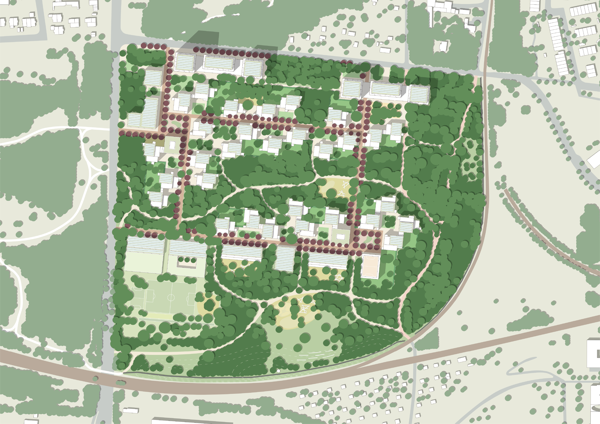

Eggarten
Forest City
A forest-based residential landscape that treats existing vegetation, succession and shared open space as the primary framework for urban development.
- Location
- Munich, Germany
- Year
- 2025
- Type
- Urban Design Studio
- Focus
- Forest urbanism
- Role
- Design · Visualization

Landscape before buildings.
Eggarten Forest City is organized as two connected neighbourhoods, structured by a clear access route while preserving the existing forest as the primary spatial framework. Winding paths, shared gardens and open clearings create a sequence of public, semi-private and private landscapes.
Freestanding residential buildings are carefully positioned to retain as many existing trees as possible, while larger building volumes frame the site edges. Car-free public spaces, community facilities, generous balconies and roof terraces strengthen the relationship between daily life and the surrounding landscape.